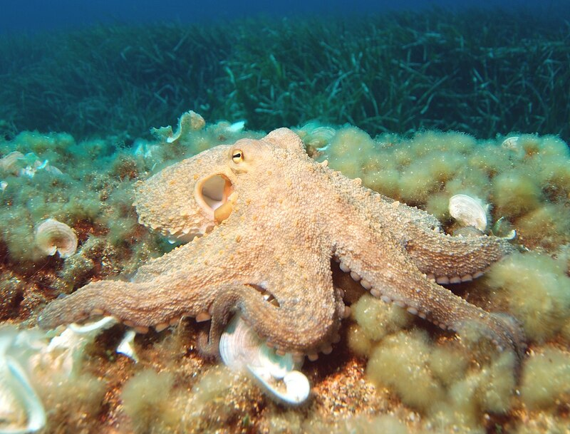

Осьминоги, или спрутовые — самый известный отряд головоногих моллюсков. Типичные осьминоги — представители подотряда Incirrina, придонные животные. Но некоторые представители этого подотряда и все виды второго подотряда Cirrina — пелагические животные, обитающие в толще воды, причём многие из них встречаются только на больших глубинах. Наука, изучающая осьминогов и других головоногих моллюсков, называется теутология.
Большинство видов осьминогов ведёт придонный образ жизни, обитая среди камней, скал и водорослей. На Дальнем Востоке излюбленным укрытием молодняка являются пустые раковины приморского гребешка. Днём осьминоги менее активны, чем ночью, поэтому их считают ночными животными. По твёрдой поверхности (в том числе по отвесной) осьминог передвигается ползком, используя щупальца с присосками. Может также плавать щупальцами назад, приводя себя в движение своеобразным водомётным движителем — набирая воду в полость, в которой находятся жабры, и с силой выталкивая её в направлении, обратном движению, через воронку, играющую роль сопла. Направление движения меняет, поворачивая воронку. Оба способа передвижения осьминога довольно медленные: плавая, он уступает в скорости рыбам. Поэтому охотиться осьминог предпочитает из засады, мимикрируя под окружение, а от преследователей старается спрятаться. Благодаря мягкому эластичному телу осьминоги могут проникать через отверстия и щели, гораздо меньшие обычных размеров их тела, что позволяет им изощрённо прятаться во всевозможных убежищах. Селятся даже в ящиках, бидонах, автомобильных шинах и резиновых сапогах. Предпочитают укрытия с узким входом и просторным помещением. Жилище своё содержат в чистоте: «подметают» струёй воды из воронки, объедки складывают снаружи в мусорную кучу. При приближении врагов (в том числе водолазов или аквалангистов) спасаются бегством, прячась в расщелинах скал и под камнями. Удирая, осьминоги многих видов выпускают струйки чернил — тёмной жидкости, вырабатываемой специальными железами. Эта жидкость повисает в воде в виде бесформенных полупрозрачных пятен и некоторое время держится компактно, пока не размоется водой. Зоологи пока не пришли к общему мнению о цели такого поведения. Жак Ив Кусто в книге «В мире безмолвия» высказывал предположение, что эти пятна — своего рода ложные цели, предназначенные для того, чтобы отвлечь на себя внимание нападающего и позволить осьминогу выиграть время, чтобы скрыться. У осьминогов есть способ защиты — автотомия: схваченное врагом щупальце может оторваться за счёт сильного сокращения мышц, которые в этом случае сами себя разрывают. Оторванное щупальце в течение определённого времени продолжает двигаться и реагировать на тактильные стимулы, что служит дополнительным отвлекающим фактором для хищника, преследующего осьминога. Зимуют многие виды в более глубоких водах, а летом переселяются на мелководье.